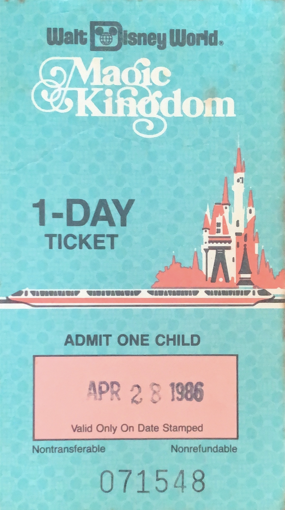

Selling one of a kind
Magic Kindom
ticket from 1986
Fun Fact!
1980 was a year of transition for Disney tickets. Disney started selling 8 and 10 ride Adventure Books that had attraction coupons (tickets) that were good for any attraction in the Magic Kingdom to the general public. Gone were the individual "A" through "E" attraction tickets. Also discontinued by the end of the year was the 12 ride Adventure Books. Magic Kingdom Passports that included everything made their debut before the year was out.
Ticket prices went up on March 23, 1980 and General Admission increased a second time on November 23, 1980.
In really good condition! I havent seen many in this style!
Click here for more information
Standard shipping. No returns.